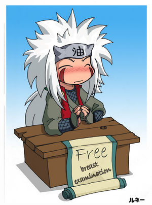

Editorial Jiraiya Bookstore
 De: La Frikipedia, la enciclopedia extremadamente seria.
De: La Frikipedia, la enciclopedia extremadamente seria.
| De la serie Literatura del mundo:
|
| Editorial Jiraiya Bookstore
|
|
|
| Escritor
|
Jiraiya
|
| Editorial
|
Editorial Jiraiya Bookstore - Konoha Associated inc.
|
| Género
|
Porno Todo tipo (Mas que todo porno)
|
| Colección
|
|
| Año
|
2003 - Actualidad
|
| País
|
Kon Hoja
|
| Idioma original
|
Konojiano
|
| Ediciones vendidas
|
Encabezando con más de 20.000.000 copias vendidas esta el libro "Sexopata yo"; de segundo con 14.543.000 copias vendidas: el libro "Un pequeño gran incesto" ambos de Cannabis Hyuuga; y de tercero con 7.462.340 copias vendidas esta: "El Ninja que me clavó su Katana" de Yashamaru
|
Dícese de la casa editorial, surtidora, partido político, estadio, arena, plazuela, expendio de tacos, puesto de ramen y editora perteneciente al ninja más pervertido de la historia de Kon Hoja, el sannin Jiraiya.
Volante de muestra
El siguiente resulta ser un volante de la casa editorial. Como pueden ver es muy sugerente en cuanto a la oferta.
Editorial Jiraiya Bookstore
¿Te gusta la saga de Icha Icha pero no tienes dinero?
¿Buscas empleo pero el Hokage te mandó al carajo?
¿Ni en la fabrica de ramen te aceptaron?
Entonces no lo dudes. Jiraiya-sama busca gente ambiciosa y talentosa para imprimir tan afamada saga.
Solo llama por telefono al
1-800-follando-sapos (36552636-72767)
o envia un mensaje a:
jiraiya_amando_sapos@somosmalos.zoofilia.com
Si te llamamos en 24 hrs. acude a nuestras oficinas en 15 días
¿Qué esperas?
¿Que se burlen de ti o que la tetona fracasada se haga famosa?
Ofrecemos:
*Sueldo base
*Prestaciones jugosas a pagar en un mes
*Servicio médico en las oficinas del Hokage
*Recepción por el Kazekage cada quinto viernes de mes si aplica
Requerimos con el aspirante:
*Facha de holgazan
*Bolsillos con polillas
*Y sobre todo que trabaje todo el año excepto feriado y festivales.
¡LLAMA YA!
Best-sellers y grandes clásicos:
Jiraiya ha tenido una magnífica idea al ver a Sakura y a Tsunade "divertirse"
En el amplio repertorio de libros de esta honorable y tacaña hasta su puta madre generosa casa editorial, se pueden contar varios títulos que se consideran clásicos. Podremos clasificarlos de tres tipos: anatómicos, romance y simple y llano sexo.
Anatomía
En la primera categoría podemos encontrar:
- El ya clásico best-seller de la kunoichi Ino Yamanaka.
- "Byakugan para principiantes": Del inventor del "Macarena no Jutsu", Megi Hyuuga. En este libro se enseña como utilizar el Byakugan para que poder espiar a quien quieras, cuando quieras y donde quieras espiarle (con notas de la experta
morbosa y medio autista en Byakugan Hinata Hyuuga).
- "Lo que el Sharingan nunca vio": del usuario medio del defecto congenito Uchiha (¡Salud!) Kakashi Hatake, cuenta de lo que no se le vé a Shizune y a cierta puta que a todos nos cae de la chingada estando en el baño. Todo un clásico para fisgones y fracasados en potencia.
- "Uso del don Hyuuga: guía de Voyeurismo": Es la obra magna de "la sucesora de Jiraiya", la
bien putilla laureada Cannabis Hyuuga. ¿Cómo hacer un buen voyeur con un Byakugan?. Todo esto está revelado en este asombroso relato, que lo hará masturbarse a cuatro manos sorprenderá.
- "Sacándose la arena": Matsuri y la dizque Primera Dama forjaron este libro juntas, siendo el de mayor éxito en varias aldeas, desde Kon Hoja hasta la Aldea de la niebla
hedionda. Hablan a fondo de las exigencias del Señor Kazekage y las cochinadas que le gustan.
- "Una mirada muy profunda a Tenten": Escrito por Ranmaru. Dentro de esta obra se relata todas, pero absolutamente todas sin censura las medidas del
plano cuerpecito de la putilla de Rock Lee, lo que sintió al espiarla sin ropa y todas aquellas cosas mediocres, graciosas y reveladoras de la vida de la kunoichi moñuda. Un libro que causa erecciones y orgasmos sorpresas en sus lectores.
- "Las mil y una danzas": Libro ilustrado de Megi Hyuuga en el que muestra paso a paso sus mas feroces pasos de danzas, como por ejemplo el "Macarena no Jutsu" y el "Remolino Bisbal". Tobo un exito entre compradores ninjas que sueñan con ser bailarines como el.
- "Megi's Anatomy": Otro libro de Megi Hyuuga, el cual supero en ventas a "las mil y una danzas" y a la obra inicial de su prima Hinata "Vida de una acosadora", sinedo uno de los mas vendidos de Editorial Jiraiya Bookstore. En este libro el monstruo Macarena señala los cambios buenisimos, beneficiosos, esplendorosos que ha sufrido su cuerpo durante la adolescencia, señalando sus medidas anatomicas y su evolucion. se dice que Naruto, Porrochimaru, Tsunade, sus primas, Jiraiya, todo Akatsuki e incluso Sasuke son fieles lectores de este volumen.Incluye una tabla en la que Megi señala el crecimento en centimetros de su
polla pelo por dia.
- "Hinata Hyuuga: medidas... de sus logros": Libro de la tetona ojo blanco. Escrito por recomendación del señor dueño de la editorial, este libro cuenta como Hinata creció en estos años anatómica y personalmente hablando
- Cocinando con mi hermana:Libro (Igual) de Hinata Hyuuga que, aprovechando que le gusta usar presentaciones sugerentes (La semana nudista del Ramen Ichiraku fué idea suya y de allí se lo fusiló). su enana y morbosa hermana fue coautora, logrando un fracaso para las dos; esto debido a que fue un libro de mediana aceptación y al boicot que la Mizukage lanzó contra el libro, arguyendo falta de creatividad y exceso de dulce.
 Jiraiya buscando inspiración(y vender algún libro de paso)
Romance
Dentro del segundo tipo tenemos:
- Un libro en extremo curioso, ya que el autor es ni más ni menos que nuestro rubio de bote, Naruto. Se trata de "Entre el busto y los látigos: guía completa de masoquismo y orgasmo mamario". Los tres primeros capitulos son guias de:
- Masajes en las tetas.
- Cosas a evitar durante el masaje
- Introducción al masoquismo.
- Uso correcto de látigos.
- Masoquismo homosexual: cuando no hay remedio.
- Cuando la masoquista tiene curvas.
- Idioteces a evitar si te gusta el cuero.
- Cosas que toleran las masoquistas con gran busto.
- Si eres el sado.
- Zonas erógenas en planas y curvas
Los demás capítulos narran los sentimientos confusos que tiene sobre su amiga del alma y la putilla rosa y un hipotético final alternativo (Donde bota a las dos por un cierto emo vengador).
Otras obras de la sección son:
- "¿Estoy plana o tengo secas las ubres?": Gran clásico de Damedame. Sobre los intentos de emular a la rubia tetona fracasada y Cannabis Hyuuga.
- "Cuando la orgia se queda en nada": Karin emplea todo el poder de su tinta para abominar de su compañero de banda, Suigetsu. Revela todos sus extraños habitos sexuales disfrazados de novela de trama complicada y (Valga la idiotez) su odio por las barritas del Capitán Pescanova.
- "Oda a tus dotes, Tsunade": Escrito por Kon Hoja Mar U, es un libro de poemas (picantes y románticos) dedicados a la Quinta Hokage inspirados a partir de chocar con las virtudes de la antes mencionada.
- "Extraño a tu amigo": Droganai se adentra en el mundo de la literatura con esta
cursi conmovedora obra en la que relata sus experiencias sexuales con Asuma-sensei y como le afectó en el amor la muerte de este mujeriego entrañable sensei
- "Como superar la muerte del padre": Escrito por Megi Hyuuga, a los once años como un ensayo literario(tarea de la academia dada por Iruka-sensei)que decidio publicar a los trece tras ser derrotado por Naruto. Se dice que este lo leyó despues de enterarse que el cuarto era su padre.
- "Lo que hago en sombras": Ino le hiciera, ya que se hace el dormido.
- En armonía canina": Hinata nos sorprendió a todos con este devastador Best-Seller, en el que difunde con señales y pelos las guarrerías en trío que hizo con su sensei drogona y el perro más civilizado, y añade en debido orden cronológico los momentos más tiernos (Sexualmente hablando) de su vida. Vació tan rápido las estanterías de la editorial que está nominado al Pornulitzer y (Por segunda vez para la autora y primera para el perrete de Kiba) al Carnalegie.
Sexo simple y llanamente
La última categoría (y la que más disfrutan todos) es la sexual, pues tenemos la obra magna del señor dueño de esta casa editora: la aclamada Icha-Icha Paraíso. Incluye:
- "El Ninja que me clavó su Katana": Un libro insigne de la editorial escrito por Amorshmaru antes de morir. Al ser lanzado, enn menos de media hora, ya todos tenían el suyo. (Sin contar a Porrochimaru y los miembros de Akatsuki.
- "Tácticas de Ligue": Best-seller de Ero-sennin, mismo que obtuvo (Ilegalmente) Kakashi. El día de su presentación estuvo el propio Kakashi para presentar el libro, mismo que fue aclamado por todos, excepto los ya citados y Temari, porq ella porque "preferiría hacerlo con el cobarde holgazán a leer semejante basura.
- "Kunai contra Katana": La secuela de "El ninja que me clavó su katana". Fue editado post-mortem de Amorshamaru, su autor. Este libro fue fríamente recibido por Kon Hoja y no tuvo tanto éxito como el primero. Ahora solo se encuentra disponible en donde gobierna el emo pelirrojo. (Que, por cierto, recibe las regalías como última voluntad de Amorshmaru).
- "A falta de un zorro...es bueno un perro:Libro de 356 paginas escrito por Hinata Hyuuga. Este causo un boom el dia el su publicacion, ahi cuenta el resultado de una noche de copas, provocada por la nostalgia de la partida del chico dattebayo, que luego acabo en una noche se sexo (increiblemente no zoofilico) desenfrenado y super ardiente entre hinata y chiba inuzuka (quien casualmente pasaba por alli). Cuando despetaron estaban en la cama de chino...para su desgracia el no estaba en casa, por lo que se cree su primera intencion era la de hacer un trio... y no recordarian nada de no ser por que lo grabaron (de donde sacaron una camara es aun un misterio); en fin el libro es tan
explicito apasionado (venga hombre que cuenta hasta lo que hicieron debajo de la cama) que se acabo a los 5 minutos, y no se sacaron mas copias a pedido de la autora para que el chico dattebayo no se entere nunca de ello ( si no queria que se entere no debio publicarlo)
- "La Quinta Hokage en todo su esplendor": El Best-seller del momento, de la autoría del propio Jiraiya. En este libro, el
viejo verde baboso Jiraiya relata lo que vio al espiar en el baño a la rubia tetona y ludópata Quinta Hokage. Incluye ilustraciones y un plano con todas las medidas (sí, todas!)
- "Cómo ser una buena putita": En este libro, Ino y Sakura te enseñan como ser tan putis como ellas. Fue de mucha aceptación en Kon Hoja, tanta que hasta Hinata Hyuuga tiene varias copias y montó un
puticlub club de fans de este libro.
- "Clávame el abanico y la flor": Obra maestra de su puta floristera.
- "Un pequeño gran incesto": De la autora
con gran "pechonalidad" también Cannabis Hyuuga. En este libro relata sus experiencias sexuales con su padre, su primo y hasta con su hermana mayor.
- "Entre flores y bichos te verás...": de la
putafloristera #1 de la aldea, narra sus encuentros con la sensei del equipo 8 (Y un bizcocho), Shino Cudeiro y Chochi Akimichi. El más oscuro de los trabajos de la editorial.
- "Manual del placer por consolador": Inclusive un mafioso tiene un clásico. Deidara consiguió un contrato
millonario que nunca empleo medio dos meses antes de entrgar el equipo. Este libro todo un clásico apto para los homosexuales como el emo parricida y el emo vengador.
- "Otro zorro al ojo": un clásico tambien de Hinata Hyuuga, en el que cuenta una historia (Con lujo de guarradas) de lo que le haría al rubio de bote de tenerlo a solas por una semana en una isla SOLA. Al final incluye una nota posterior a su encuentro con un animalejo llamado Onbaa.
- "Poemas para la noche de sexo": Cannabis Hyuuga volvió con otro best-seller, tanto que en media hora, las bateas de la Editorial estaban vacías. Esta antología de poemas bien sexuales son el toque perfecto para una noche de sexo con todo.
- "Tirándose al emo": Karin se lanza de nuevo con este libro que es más un
plagio que debe quemarse intento fantasioso por tirarse al emo de emos y a Kimimaro.
- "La vuelta del escorpión": Kankurou relata las guarrerías que hizo (Junto y por separado) con el Sr. Emo Kazekage, la putilla del abanico, la putilla del Kazekage y Sasorinocho sin sus marionestas.
- "Violando... la privacidad de... Sasuke:" un tipo con nombre de televisor mafioso muestra los motivos por los que quiere violar a su emano y las guarradas que hizo con el pescado con patas y el japones más japones del mundo.
- "Él, sado y yo": Es la secuela del libro de Cannabis Hyuuga "Un pequeño gran incesto". Cannabis ha crecido en edad y en
tetas altura y se ha dado cuenta que la mejor noche de sexo tiene tres cosas: su padre, el sado y ella misma.
- "Soy yo tu chica-mala": De la autoría de Temari, este libro de poemas picantes dedicados a un cierto zoofílico del bosque ya es un éxito en la editorial.
- "El burdel de la montaña": Obra maestra de Cannabis Hyuuga. Aunque Megi Hyuuga y 1010 quisieron usar los borradores de este libro, fueron descubiertos. El libro trata sobre la historia secreta y sin censura del "Burdel de la Montaña Hokage", el primer cabaret de Kon Hoja, desde su fundación hasta la actualidad.
Como matar a tu clan
for dummies® Sensei, llegas tarde (Otra Vez)
for dummies® - "Violando... un pescadillo suelto": un borrador que nos cuenta las salvajadas sexuales entre el televisor italiano y pejendejo afeitador; editado por el emo vengador propiedad de su hermano parricida. Por desgracia, fue de los libros con mejor margen de ventas por tres semanas, superando incluso los libros de Cannabis Hyuuga juntos. Disponible solo en donde se sienta Tsunade.
- "Las noches más marranas": Iruka y Shizune sacaron a la luz esta obra salida de
jornadas de sexo con Tonton y el perrete de Kiba varias noches en vela haciendo cosas chanchas. Editado post mortem (De Shizune, ni puta idea del fracasado andante).
- "Cuentos de travestis y prostitutas": Un nuevo libro de la sucesora de Jiraiya. Esta obra magna contiene relatos de las prostitutas y los travestis del momento, además de otros procedentes de Kon Hoja, de la Aldea de la Arena y de la Aldea de la Lluvia.
- "Sexópata, Yo": Nuevo libro de la sucesora de Jiraiya. Se lo ha calificado de "Impresionante, oscuro y chocante". La pequeña Hyuuga nos revela como es la vida de una adicta al sexo y al voyeur como sólo ella puede relatar, sin miedo ni pelos en la
polla lengua. A los 5 minutos de ser publicado y luego de una firma de autógrafos por parte de la enana incestuosa, se agotó. 1010, la puta arenosa, el butanero, Mierdashi y Mega-Tetona Hentai ya lo leyeron y lo recomiendan a todo el mundo
- "Los secretos del Ino-Shika-Cho": Un libro escrito por
tres viejos gays Inoichi Yamanaka, Choza Akimichi y Shikaku Nara en el que relatan como debe hacerse la pose Ino-Shika-Cho para que resulte una buena experiencia sexual y cómo hacer para no arruinarlo todo. Se agotó rápidamente y fue vendido en varias aldeas. Mierdashi, Sasukemo, Pescadito-sensei, Kaputo y Putanai se lo bajaron de Internet y les encantó. Tanto les gustó que quieren que haya una segunda parte.
Otros
Cine (Colaboración de Hyuuga's Porno Studios)
- "Ghost, Más allá del amor (Película de 1990)": Gekko Hayate y Yugao Uzuki nos deleitan con esta romántica película sobre un romance entre 2 mundos
- "Moonwalker": Porrochimaru nos narra su vida a través de este musical
- "Icha-Icha Paradise (La película) 3D": Esta película producida por Hyuuga's Porno Studios escrita por Ino y en 3D para mayor disfrute
sexual como si estuvieras allí
- "Orochimaru, Esto es Todo": Esta película narra la vida y muerte de Porrochimaru después de que Sasuke lo matara
Algunos comentarios de los lectores:
Jiraiya al descubrir el índice de ventas(triple del esperado)
Hay comentarios varios, pero hay algunos valiosos:
«Sería mejor si apareciera Naruto-kun»
~ Hinata Hyuuga sobre Kunai contra Katana
«Apenas leí el prólogo... ¡¡PERO PROMETE INTRIGA, MISTERIO, PASIÓN Y EL BONITO AMOR ENTRE UN HOMBRE Y UNA MUJER!!»
~ Kakashi Hatake en la presentación de Tácticas de ligue
Jiraiya invitó a sus amigos tras su gran éxito
«¡¡¡NARUTO, NO COMPRES ESO!!!»
~ Sakura Haruno respecto a que Naruto compre el libro de Hinata
«¡¡¡¡DAME ESO NARUTO!!!! ¡¡¡TE LO DEVUELVO EN CUANTO LO ACABE POR QUINTA VEZ!!!»
~ Sakura Haruno cuando lo leyó por primera vez completo.
«No tiene mucho de lo que me gusta, pero es ameno. Quizás busque un contrato.»
~ Porrochimaru tras leerse "El Ninja que me clavó su katana"
«Me gustaría que Temari leyera esto, es muy bueno. Aunque sería una pena si me mira feo.»
~ Gaara tras leer Kunai contra Katana quince veces sin comer por tres días.
« y esto cuando paso????¡¡¡¡¡¡¡¡¡¡¡¡¡»
~ kiba cuando leyo el libro de hinata. Se dice que para que no cuente nada hinata le dejo recrear el libro con ella.
«Voy a implementar esto con Gaara-sensei y por fin va a querer hacerme suya»
~ Matsuri tras aprenderse de memoria las reglas de "Como ser una buena putita" de Ino y Sakura.
«Hijo, no sabía que fueras tan bueno en la cama, ¿me enseñarías cómo lo haces?, porque quiero sorprender a tu madre»
~ Shikaku Nara tras leer tres veces seguidas "Clávame el abanico y la flor".
«Ya era hora de que alguien hiciera sus propios consoladores. Hmm.»
~ Deidara cuando se presentó su libro.
«¡GUAU GUAU WOOF ARF! (Ni siquiera dije eso)»
~ Ino
«Saben que no me gusta esperar.»
~ Sasori despues de pernoctar por el libro de Deidara

|
"Un pequeño gran incesto" es una obra llena de misterio y deseo prohibido
donde no se ve el menor pudor hacia la sexualidad, el incesto y el qué dirán.
Más que un libro erótico, se lo considera una novela romántica que trata
del obsesivo amor de una hija por su familia
Es un libro impresionante que vale la pena leer
REALMENTE EXCELENTE
|

|
| Artículo del "The Kon Hoja Times" sobre "Un pequeño gran incesto" de Cannabis Hyuuga
|
«Es un libro perfecto... me agrada que se enorgullezca de lo que tiene y que no sufra por ello»
~ Cannabis Hyuuga luego de terminar de leer el libro de 1010
Por el contrario, las constantes manifestaciones en contra son realmente duras:
«Te dije que no me gusta esperar»
~ Sasori cuando se agotó el primer tiraje del libro del travelo dudoso
«Sabía que la Academia era mala idea»
~ Inoichi Yamanaka cuando se enteró de las guarreías de su hija
«Vaya mierda. Mejor me largo a comer»
~ Chochi Akimichi cuando se leyó las dies primeras lineas del libro de el chico Bisbal de mierda
«No me gustó para nada, yo por lo menos la incluí en mi libro»
~ la putilla floristera
«¿Acaso ese era Sasori no Danna? Hmm.»
~ Deidara tras leerse las diez primeras... páginas del libro de Gepetto
¿Se recomienda el trabajo aquí?
Desde luego que sí, ya que hay vacantes en todos los departamentos. De momento las areas que están en demanda son:
- Imprenta
- Cafetería
- Diseño de portadas
- Distribución.
Escándalos
Como todo buen negocio, esta insigne casa editorial tuvo momentos oscuros:
Temari vs. Editorial Jiraiya Bookstore: feminismo al límite
|
|
¡Ya basta de semejante
ultraje! Jiraiya es un
maldito degenerado sin el menor
respeto por el género femenino.
¡Por eso llamo a un boicot de sus libros
ahora mismo como mujer digna!
|
|
| Fragmento del discurso de Temari en el acto de la reunión de asociaciones feministas de Kon Hoja, realizado en el Ichiraku Ramen
|
Este era el discurso que Temari daba en contra de las publicaciones de la editorial, particularmente del libro "La Quinta Hokage en todo su esplendor" de Jiraiya. Y gracias a esta orgullosa señorita, las asociaciones feministas de todo Kon Hoja organizaron marchas para cerrar la editorial.
En una estrategia política, la "Frogtit" Hokage suspendió la publicación de cualquier libro de la editorial, lo que causó el desplome de la economía local en un 500 % y el descontento de cierta parte de la población, sobre todo el clan Akimichi, que se mostró sumamente ofendido.
Al sufrir constantes ataques con tomates y piedrazos, la Hokage presentó su renuncia e instó a su ya designado sucesor (Nombre censurado para proteger identidades) que tambien renunciase apenas tomase el cargo. Sin embargo, al estar en misión junto a su equipo y a Cejotas este designio se volvió en nada.
Hasta que sucedió lo siguiente:
Anoche Domingo por la noche se sorprendió a la Quinta Hokage y al dueño de la editora Jiraiya Bookstore en plena juerga con sapos y con una puerca vestida de prostituta. Sabemos de muy buena fuente que tambien se vió a Temari-sama junto a ellos bebiebdo mientras balbuceaba sandeces varias con fotos suyas desnuda junto al vicepresidente de la editorial, Naruto Uzumaki y leyendo a los gritos pasajes en los que participaba ella del libro de Chica-Mala Nara "Clávame el abanico y la flor"
Luego de este suceso, en el que se vio que Arenita Feminista tampoco era una santa, todos los miembros de la editorial fueron perdonados y Temari presentó este mensaje en el periódico local:
|
|
Realmente estoy apenada
por las acciones publicadas en el
diario de la Aldea de la Hoja. Sobre las fotos
fueron un montaje que los Akimichi
publicaron en toda la aldea. Es mi sagrado deber,
como hija del cuarto Kazekage, enmendar esta injuria
|
|
| Disculpa oficial de Temari en el "The Kon-Hoja Times
|
Hyuuga vs. Hyuuga: las hermanas no son unidas
Un escándalo mayor fue protagonizado por la escritora de uno de los libros más famosos de la editora. La noche del 13 de Agosto del año en curso. Hinata Hyuuga fue demandada por su propia hermana, Cannabis Hyuuga por Plagio en primer grado con agravantes, pues su obra, "Vida de una acosadora", fue (En palabras de la agraviada) una copia de su libro, "Uso erótico del don Hyuuga: guía de voyeurismo", editado por ella misma.
Posteriormente el escándalo se intensificó, pues Hinata contrademandó a su hermana por Difamación de Honor al encontrarse en las oficinas de "The Kon Hoja Times" copias de una foto de ella desnuda a los 2 años junto a su primo en una bañera.
No tengo nada que decir. Mi hermana es un pequeño monstruo, pero esto va más allá de lo que ella acostumbra, respondió en entrevista para el mentado diario aquel. Pero la corte falló a favor de Cannabis, y Hinata fue obligada a pagar el 25% de sus regalías por dos años y medio.
Además, Cannabis fue sobreseída en el juicio por Difamación de Honor, debido a que se descubrió que el autor de las fotos había sido Megi Hyuuga en uno de sus intentos por expulsar a su prima Hinata de la rama principal (Souke) de los Hyuuga.
El clan Yamanaka vs. Academia Ninja de Kon Hoja: ¿pedofilia?
Se publicó en "The Kon Hoja Times" una carta de tono agresivo de parte de Inoichi Yamanaka (orgulloso floristero travesti padre de la puta floristera kunoichi Ino Yamanaka) culpando a la Academia de pervertir a su hija, de la cual les presentamos un fragmento bastante serio:
|
|
El mancillar el nombre de mi clan y
ensuciar a mi hija de esa forma.
será algo que pagarán con el peso de la ley
Pido que se ajusticie a los responsables
de cometer tal bajeza contra una jovencita inocente
|
|
| Fragmento de la carta de Inoichi Yamanaka publicada en "The Kon Hoja Times" contra la academia ninja
|
Actualmente, el único acusado es Ebisu-sensei , que está siendo enjuiciado por este caso, el cual recibió la carátula de "Abuso deshonesto con agravantes"
Matsuri vs. Hyuuga-Yamanaka-Haruno: plagio comprobado
"Arena en los zapatos: guía para complacer al sensei" era el libro que Ino Yamanaka y Sakura Haruno
Al descubrirse esto, la propia editorial rompió el contrato millonario que tenían y Matsuri fue a juicio por doble caso de Plagio. La corte, por supuesto falló a favor de Hyuuga, Yamanaka y Haruno. Matsuri fue sentenciada a pagar una indemnización a las agravadas de 75.000 dólares a cada una.
Hyuuga vs. Hyuuga vs. planipanda: el plagio nuestro de cada día
El Bisbaloide resultó demandado por su incestuosa prima la mañana del 13 de septiembre del año en curso debido a un pequeño "préstamo" del "macarenazo" (Nombre popular del primer libro del Bisbaloide.
En respuesta la enana sexopsicópata demandó, a su vez, a 1010 por plagio en segundo y tercer grado.
Por desgracia, aquel demandó a su prima por difamación de honor a nombre de su "compañera de equipo.". La demanda inicial se fue agravando hasta que en el juicio se presentó el señor dueño, mismo que declaró que Cannabis no tenía fundamentos fuertes para demandar. Pero Jiraiya se equivocó, ya que Cannabis tenía razón y fue comprobado que su primo y 1010 habían plagiado los borradores de los dos nuevos libros de la psicópata ojo blanco que saldrán próximamente, hablamos de "Cuentos de travestis y prostitutas" y "El burdel de la montaña".
Ambos tuvieron que pagar como indemnización el 70% de sus ganancias a Cannabis tras su partida a la Aldea de la Lluvia ácida.
Hyuuga vs. Hyuuga II: ¿Error legal?
Las cosas nunca son de color de rosa. Y Cannabis Hyuuga parece ser la excepción... hasta ahora.
Resulta extraño que el borrador de "Hinata Hyuuga: medidas... de sus logros" fuera robado. Por un tiempo se detuvo a Megi por robo, pero se demostró la culpabilidad de la psicópata pigmea por dos cosas: las huellas digitales no coincidían con las de Megi (A él se le pagó indemnización) y el extremo parecido de la introducción del último libro de la enana con la introducción del borrador de Hinata Tetotas. El resultado fue a favor de Las montañas andantes ya que se presentaron pruebas contundentes. El precio a pagar por la enana psicomorbosirijilla fue el equivalente a 90% de lo ganado en demandas anteriores incluyendo las intrafamiliares. Ahora papi le niega la mesada a su favorita por idiota.
El asesinato del Señor dueño: el comienzo de la ruina
A últimas fechas Sarah Bustani se decidió a tomar las riendas de la editorial, pero un mal manejo impulsó al director a su muerte. A solo 3 días a marcha desde la aldea se encontró un par de cuerpos sin vida, uno de sapo y (Tragico para la editora) el del Sabio Pervertido. El The Kon Hoja Times reseño ésta columna:
|
|
Ayer por la tarde, a solo tres días a paso normal
de la aldea, se encontraron los cuerpos
sin vida de un sapo y del dueño de la
Editorial Jiraiya Bookstore.
El The Kon Hoja Times lamenta la pérdida del más grande escritor del país...
|
|
| Fragmento de la columna del The Kon Hoja Times del día posterior del asesinato.
|
La editora, naturalmente, debía pasar a manos del Vicepresidente, pero al estar fuera Tsunade se encargó de la editorial. Esperemos que no la juege en su casino.
Premios y nominaciones
La literatura erótica es algo muy común en estos días. Hay montones de premios o galardones a los escritores de este género y los libros de esta editorial han recibido algunos de ellos.
Aquí les presentamos los premios y nominaciones que han ganado hasta ahora los autores de la editorial por orden cronológico:

|
|
|
Autor(es):
- Frikiman
- Roms
- Khazike Khashondo
- Naruto hyuga
- El Samo 2
- AlemanH
- Lljosemll
- MasterWolf59
- Catacras
- Otacross
Frikipedia 2005-2016, Licencia
GFDL 1.2 - Extraído por FrikiLeaks